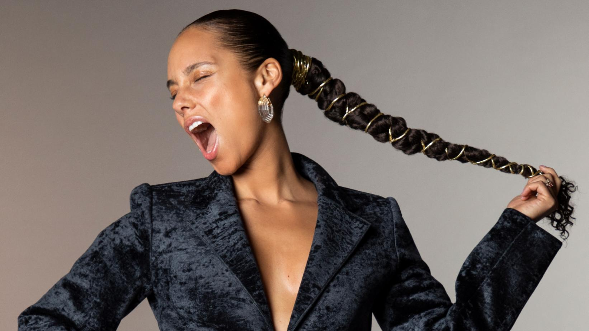

Alicia Keys ศิลปินหญิงผู้ทรงอิทธิพลแห่งวงการ R&B สำหรับเส้นทางดนตรีของเธอนั้นอยู่ในช่วงยุคปี 2000 ถือว่าเป็นยุคทองของเพลงฮิปฮอปและอาร์แอนด์บี มีศิลปินหน้าใหม่ได้เปิดตัวออกมามากมายในช่วงนั้น รวมถึง “Alicia Keys” มีชื่อจริงว่า Alicia Augello Cook เป็นศิลปินหญิงชาวอเมริกันที่เป็นทั้งนักร้องและนักแต่งเพลงแนว "R&B" โดยเธอเริ่มแต่งเพลงตั้งแต่อายุ 14 ปี เธอจบการศึกษาจาก Professional Performance Arts School ด้วยเกรดที่เพอร์เฟค และจบมัธยมปลายตั้งแต่อายุ 16 ปี และได้รับการตอบรับให้เข้าศึกษาที่มหาวิทยาลัยโคลัมเบีย ซึ่งต่อมาเธอตัดสินใจเลื่อนการเรียนออกไป เธอเริ่มเข้าวงการเพลงในปี 1996 หลังจากนั้นเธอได้ปล่อยอัลบั้มแรก "Song In A Minor" วางขายเดือนเมษายน ปีเดียวกัน เพลงในอัลบั้มนี้ผสมผสานแนวเพลงไว้มากมาย เช่น R&B, Hip-Hop, Classic, และ Jazz ซึ่งวันแรกมียอดขายได้มากกว่า 50,000 แผ่น หลังจากนั้นซิงเกิ้ลแรกของเธอ "Fallin" ติดอันดับหนึ่งใน Billboard นาน 6 สัปดาห์ เรียกได้ว่าเป็นก้าวแรกของความสำเร็จในฐานะศิลปินของเธอ ส่วนอัลบั้ม "Song In A Minor" ติดอันดับหนึ่ง ตั้งแต่สัปดาห์แรกของการวางจำหน่าย โดยขายได้ 4 ล้านชุด ในเวลาเพียง 5 เดือน อัลบั้มชุดที่ 2 "The Diary of Alicia Keys" เปิดตัวที่อันดับ 1 ในอเมริกาด้วยยอดขาย 618,000 ชุด มีเพลงดังติด Top10 อย่าง "You Don't Know My Name","Diary" และ "If I Ain't Got You" ในปี 2004 ยังได้รับรางวัล "Best R&B Video" ด้วยเพลง "If I Ain't Got You" จากเวที MTV Music Awards และ "Best R&B Video" ในเพลง "Karma" สำหรับปี 2005 ส่วน Grammy Awards 2005 เธอได้ร่วมร้องเพลงกับ Jamie Foxx และ Quincy Jones ในเพลง "Georgia on My Mind" ในค่ำคืนนั้นเธอยังได้คว้ารางวัลไป 4 รางวัลคือ "Best R&B Album" จากอัลบั้ม The Diary of Alicia Keys, "Best Female R&B Vocal Performance" จากเพลง "If I Ain't Got You", "Best R&B Song" จากเพลง "You Don't Know My Name", และ "Best R&B Performance by a Duo or Group with Vocals" จากเพลง "My Boo" ร่วมร้องกับ Usher
ในปี 2005 เธอได้ออกอัลบั้ม MTV Unplugged ทางด้านชาร์ทอัลบั้มนี้เปิดตัวที่อันดับ 1 เปิดตัวด้วยเพลง "Unbreakable" ในอัลบั้มชุดนี้เธอถูกเสนอเข้าชิงรางวัล Grammy Awards 4 สาขา แน่นอนว่าทุกครั้งที่เธอไปเดินพรมแดง ขึ้นไปรับรางวัลเราจะเห็นเธอในภาพของศิลปินหญิงสุดสวยที่แต่งหน้าทำผมมาอย่างเป๊ะ ไม่ว่าจะถ่ายจากมุมไหนก็สวยจากการที่เธอเตรียมตัวมาดี ตั้งแต่เลือกเสื้อผ้า จ้างช่างแต่งหน้า ช่างทำผม เพื่อให้ตัวเธอออกมาดูดีที่สุดเมื่ออยู่ต่อหน้าสื่อและแฟนคลับ ก่อนที่ความคิดของเธอจะเริ่มเปลี่ยนไปในปี 2016 จากการร่วมงาน MTV VMAs 2016 นั่นเอง แม้ว่าปัจจุบันเธอจะเป็นศิลปินผู้ทรงอิทธิพลในโลกของดนตรี R&B แต่เธอก็ไม่ได้ทิ้งความเป็นตัวเองไป เธอยังคงเชื่อมั่นและมีความสุขกับการใช้ชีวิตโดยที่ไม่แต่งหน้า ยกเว้นเมื่อจำเป็น เช่น ถ่ายแบบให้กับนิตยสาร ซึ่งแน่นอนว่าด้วยความที่เป็นศิลปินดังย่อมมีแฟนคลับส่วนหนึ่งเห็นด้วยกับสิ่งที่เธอทำให้เห็นว่าความสวยนั้นไม่ต้องพึ่งเครื่องสำอาง